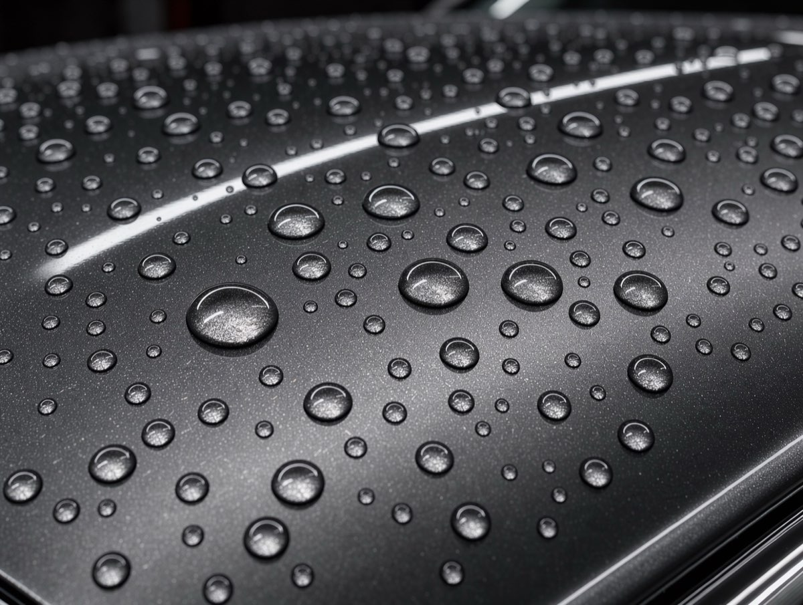

Głębia koloru jak z salonu
Czerń jest czarna, a nie szara. Metalik znowu „pracuje” w słońcu.
Szanujemy Twoją prywatność
Używamy plików cookies niezbędnych do działania strony. Za Twoją zgodą korzystamy też z cookies analitycznych (Google Analytics), żeby wiedzieć, co ulepszać, i marketingowych (piksel Meta, Google Ads), żeby mierzyć skuteczność reklam. Możesz zaakceptować wszystkie, odrzucić wszystkie albo wybrać sam. W tej wersji demonstracyjnej nie wczytujemy żadnych narzędzi śledzących. Polityka prywatności.
Dla kierowców, których lakier w słońcu wygląda jak pajęczyna. Polerujemy maszynowo w kontrolowanym świetle i mierzymy grubość lakieru przed pracą i po niej.

Przesuń suwak i porównaj lakier po trzech latach myjni automatycznych z efektem po korekcie dwuetapowej.


Przeciągnij suwak albo zaznacz go klawiszem Tab i użyj strzałek
Mikrorysy rozpraszają światło, więc lakier wygląda na matowy. Korekta wyrównuje wierzchnią warstwę lakieru bezbarwnego i przywraca ostre odbicie.
Czerń jest czarna, a nie szara. Metalik znowu „pracuje” w słońcu.
Mierzymy lakier w wielu punktach i dobieramy agresywność polerowania do grubości.
Auto wygląda na zadbane, a raport z pomiarami odpowiada na pytania kupującego.
Te miejsca sprawdzamy w świetle lamp na każdych oględzinach. Lupy pokazują je z bliska.
Koliste ślady po myjni znikają. Maska odbija światło ostro, bez mgły.
Zmatowiałe klosze polerujemy, żeby światła dobrze oświetlały drogę.
Rysy od szczotek i paznokci przy klamkach usuwamy w dwóch etapach polerowania.
Przewiń, żeby zobaczyć, gdzie pracuje polerka. Zbieramy tylko tyle lakieru bezbarwnego, ile trzeba.
Mierzymy grubość lakieru na każdym elemencie i oglądamy go pod lampami. Wiesz, co da się usunąć, a czego nie, zanim zaczniemy.
Ręczne mycie, usuwanie smoły i opiłków, glinkowanie. Brud na lakierze w trakcie polerowania działałby jak papier ścierny.
Najpierw cięższa pasta na głębsze rysy, potem wykańczanie dla połysku. Postęp sprawdzamy lampą po każdym panelu.
Lakier dostaje wosk albo powłokę, jeśli ją wybrałeś. Przy odbiorze dostajesz raport z pomiarami przed i po.
Rodzinne kombi myte co tydzień w myjni szczotkowej. Zobacz więcej realizacji

„Przed korektą pokazali mi na lampie każdą rysę i powiedzieli, której nie da się usunąć. Dokładnie tak było. Auto sprzedałem w tydzień.”
Pełną listę znajdziesz w poradniku 5 błędów przy myciu auta, które matowią lakier.
Cena zależy od wielkości auta, twardości i stanu lakieru oraz liczby etapów polerowania. Podajemy jedną kwotę po oględzinach i pomiarze, zanim zaczniemy.
Tak, minimalnie, dlatego mierzymy go przed pracą i po niej. Zbieramy tylko tyle, ile trzeba do usunięcia defektu, a wyniki są w raporcie.
Nie każdą. Rysy w lakierze bezbarwnym usuwamy lub mocno spłycamy. Rysa do podkładu wymaga lakiernika. Mówimy o tym przed rozpoczęciem pracy.
Zależy od sposobu mycia i zabezpieczenia. Hologramy wracają głównie przez myjnie szczotkowe i wycieranie na sucho. Z powłoką ceramiczną i dobrą pielęgnacją efekt trzyma się znacznie dłużej.
Wyślij zgłoszenie albo przyjedź na oględziny. Pokażemy Ci rysy pod lampą i powiemy uczciwie, które znikną.
Oddzwaniamy w ciągu 2 godzin roboczych z widełkami ceny i wolnym terminem.
